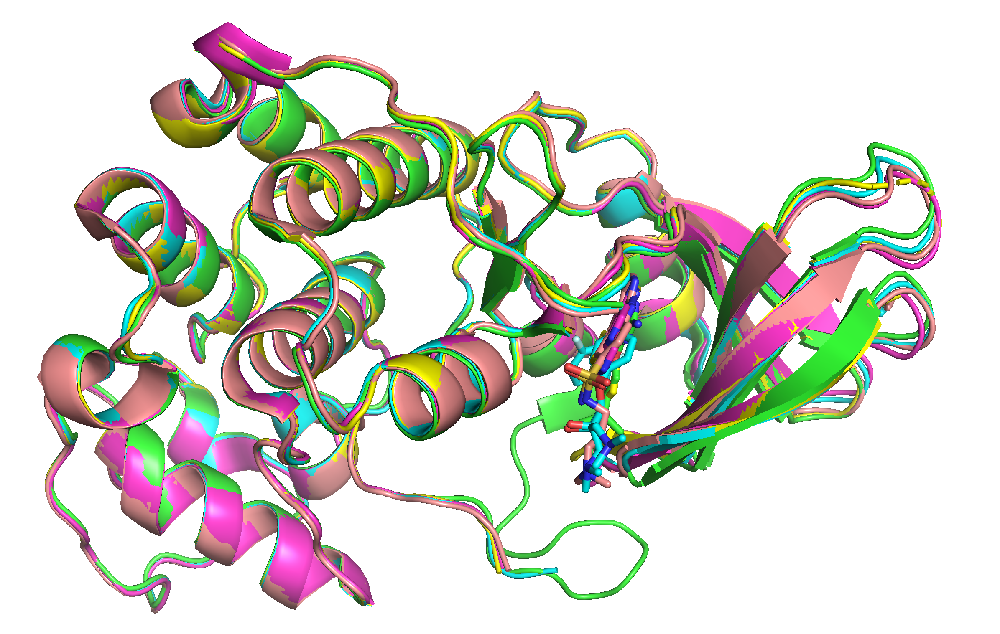
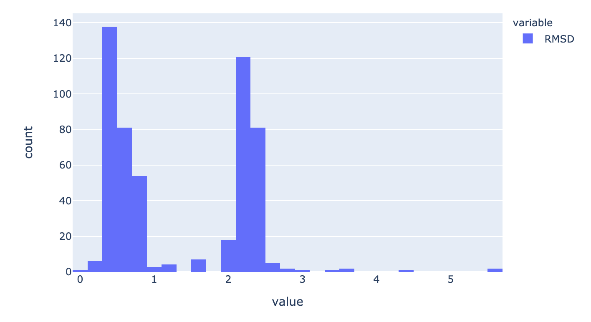

Superposer¶
This is a demonstration project to superpose protein structures. It includes automatic documentation generated from source code.
Features¶
Basic console app written in Python to carry out superimposition given the set of parameters
Uses multithreading where available
App uses PDBe API services and ModelServer
Superposition uses Gemmi that implements fast quaternion algebra superposition algorithm QCP
View of the RMSD distribution using streamlit to show possibilities of interactive visualization directly in Python.
Writes out superposed structures in mmCIF format to enable their visual inspection.
Example of unit tests including mocking in pytest
Docker image
Automatic documentation generated from source code using Sphinx
Basic application level logging to see what’s happening.
CI using Github actions to run unit tests and to generate this documentation
Process description¶
Retrieve a list of mappings for uniprot id (pdb-id and label_asym_id)
Due to technical reasons auth_asym_id is needed in another step so another call to retrieve auth_asym_id from label_asym_id given pdb-id.
Download portion of asymetric unit given the pdb id and auth_asym_id.
Superpose everything on the top of each other (note: ligands are writen out only based on auth_asym_id and not distance to chain.)
Write out modified coordinates
Write out simple statistics

Streamlit visualization¶
Simple interactive histogram of superposition RMSDs. Run the following commands:
pip install -e ".[views]"
streamlit run superposer/views/show_rmsd.py
open web browser and copy paste the URL that is going to be shown. You should see interactive plot similar to this:

Automatic documentation¶
Comprehensive API documentation with information on every function, class and method. This is automatically generated from the source code and comments.